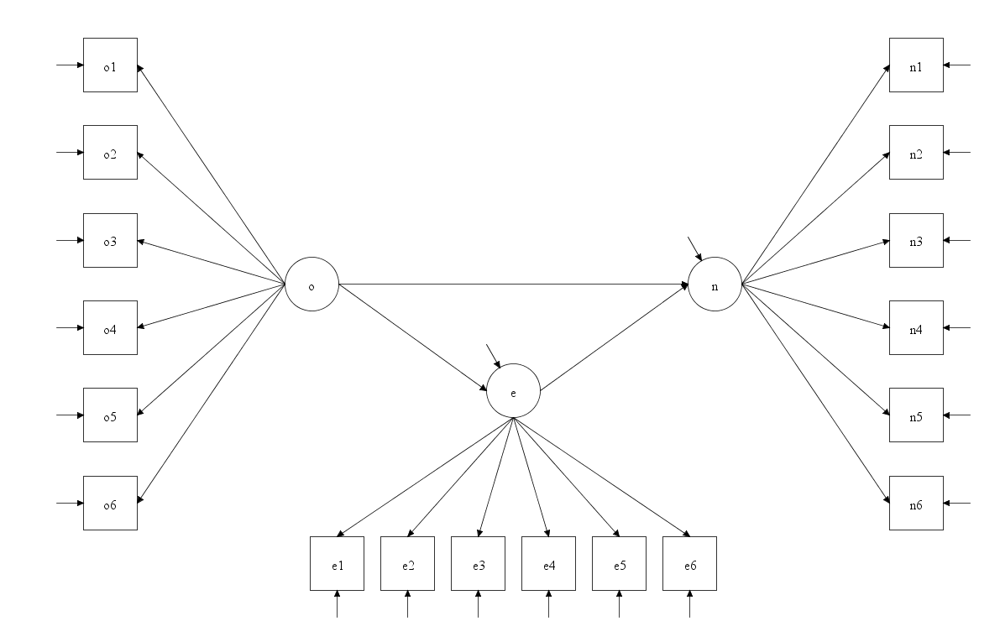
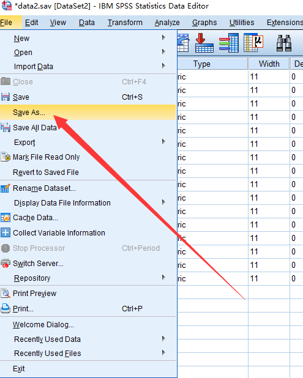
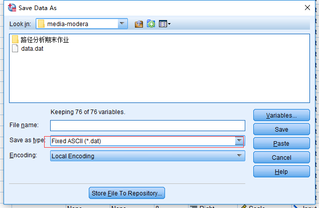
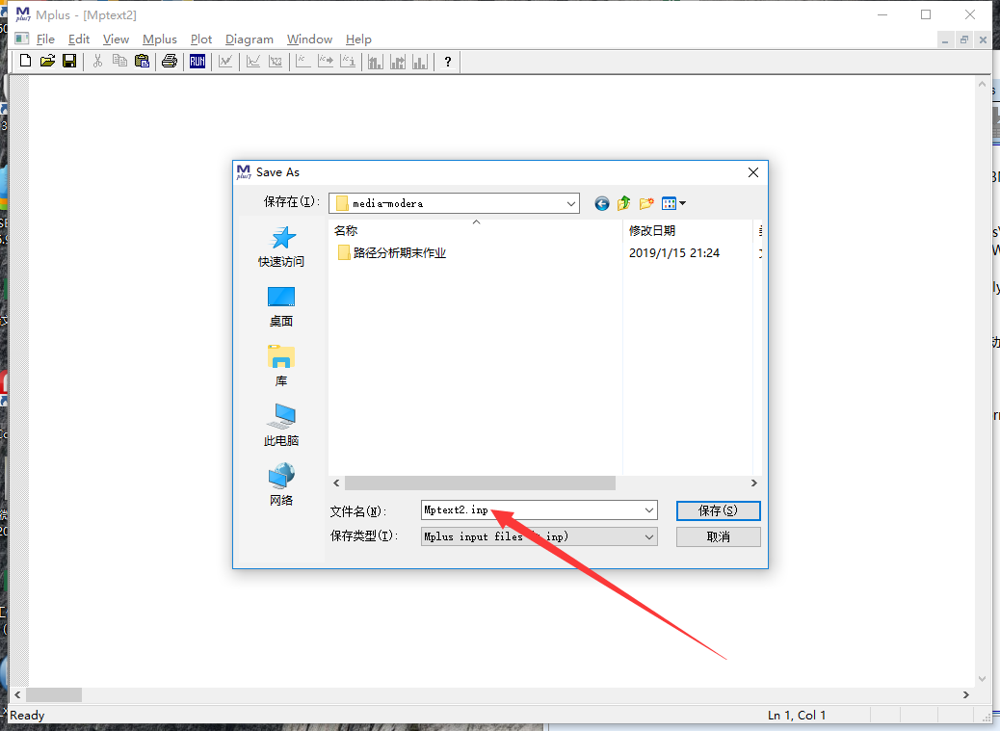
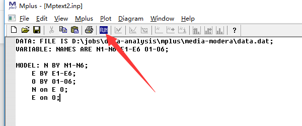
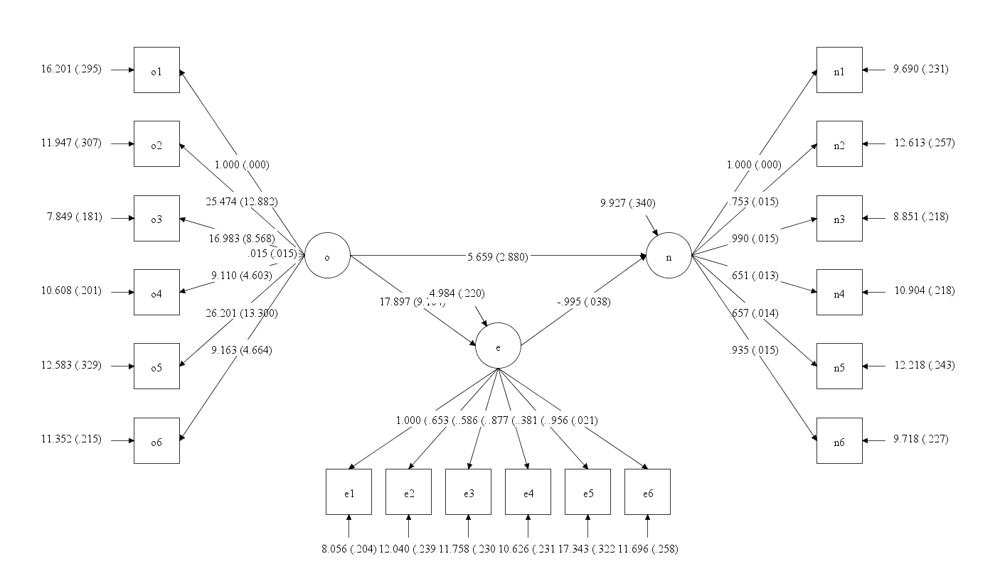

本篇文章主要是写给没用过mplus的人, 所以我们从安装软件开始, 然后用一个实例来演示如何使用Mplus。
这个实例是一个结构方程分析, 如果你不懂这个模型也没关系, 我们主要是看看如何使用软件!
下载地址
- Mplus Demo版: 链接：https://pan.baidu.com/s/1zDI2hphZNvdeXvQ9YjnxDg 提取码：gxkr
- Mplus 破解: 链接：https://pan.baidu.com/s/1afay1ioUn5pd21h9KTacbg 提取码：9gkc
安装方法
- 首先下载上面的两个软件
- 先安装第一个软件, 它是官方下载的安装软件
- 在安装第二个, 它实际上是修改了一些文件
入门
假设我们使用Mplus做一个结构方程分析:
数据介绍
这里有一个SPSS数据, 数据的变量信息如下:
- N: 神经质（Neuroticism） 个体情绪的状态，体验内心苦恼的倾向性。
- N1: 焦虑(Anxiety) 面对难以把握的事物、令人害怕情况时的状态。
- N2: 愤怒性敌意(Angry Hostility) 人们准备去体验愤怒情绪的状态。
- N3: 抑郁(Depression) 正常人倾向于体验抑郁情感的个体差异。
- N4: 自我意识(Self-Consciousness) 人们体验羞耻和面临困境时的情绪状态。
- N5: 冲动性(Impulsiveness) 个体控制自己的冲动和欲望的能力。
- N6: 脆弱性(Vulnerability) 个体面对应激时的状态。
- E: 外向性（Extraversion） 个体神经系统的强弱和动力特征。
- E1: 热情性(Warmth) 个体对待别人和人际关系的态度。
- E2: 乐群性(Gregariousness) 指人们是否愿意成为其他人的伙伴。
- E3: 自我肯定(Assertiveness) 个体支配别人和社会的欲望。
- E4: 活跃性(Activity) 个体从事各类活动的动力和能量的强弱。
- E5: 刺激追寻(Excitement-Seeking) 人们渴望兴奋和刺激的倾向性。
- E6: 正性情绪(Positive Emotions) 人们倾向于体验到正性情绪的程度。
- O: 开放性（Openness） 个体对体验的开放性、智慧和创造性。
- O1: 幻想(Fantasy) 个体富于幻想和想象的水平。
- O2: 美感(Aesthetics) 个体对于艺术和美的敏感和热爱程度。
- O3: 情感(Feelings) 人们对于自己的感觉和情绪的接受程度。
- O4: 行动(Action) 人们是否愿意尝试各种不同活动的倾向性。
- O5: 观念(Ideas) 人们对新观念、怪异想法的好奇程度。
- O6: 价值(Values) 人们对现存价值观念的态度和接受程度。
假设我们要做的结构方程的结构如下图:

数据格式转换
因为Mplus常用的数据格式是dat格式, 因此我们需要将数据保存到一个dat文件中:
- 选择”File->Save As”

- 选择dat格式:

- 然后点击”save”即可
创建mplus脚本
打开mplus软件, 按下”ctrl + N”创建一个新的文件。
然后按下”Ctrl + S” 保存这个文件。

设置数据
输入语句:
1 | DATA: FILE IS D:\jobs\data-analysis\mplus\media-modera\data.dat; |
这里面Data: FILE IS是固定语句, 后面是数据的绝对路径。如果脚本文件和数据文件在同一个文件夹, 你可以只使用数据的文件名, 而没必要使用绝对路径。
设置变量名
在Mplus中输入如下语句:
1 | VARIABLE: NAMES ARE N1-N6 E1-E6 O1-O6; |
VARIABLE: NAMES ARE是固定格式, 后面都是变量名, 注意你的数据和变量名顺序都是对应的, 如果上面的写法比较繁琐, 你可以使用下面的写法:
1 | VARIABLE: NAMES ARE N1-N6 E1-E6 O1-O6; |
设置分析方法
因为MPLUS中针对连续型变量的结构方程模型的默认分析方法是最小二乘法即ML ，
所以如果使用的方法是这个，那么分析方法语句可以不写，
当然也可以写，即ANALYSIS: ESTIMATOR = ML; 如果采用其他方法，需要写出来，
例如 ANALYSIS: ESTIMATOR = MLR;或者ANALYSIS: ESTIMATOR = WLSMV;
本例中我们使用下面的代码:
1 | ESTIMATOR = ML; |
设置模型
首先设置潜变量所包含的显变量:
1 | MODEL: N BY N1-N6; |
然后我们设置潜变量之间的回归关系, 比如N对E和O回归, E对O回归:
1 | N on E O; |
写到一起就是:
1 | MODEL: N BY N1-N6; |
运行脚本
上面我们已经写完了所有的基本脚本, 我们可以把所有的命令都贴出来:
1 | DATA: FILE IS D:\jobs\data-analysis\mplus\media-modera\data.dat; |
点击mplus中的”run”按钮即可运行分析过程:

查看路径图
如果你想看到结构方程的路径图, 你可以点击菜单”diagram->view diagram”, 下图就是我们看到的图:

注意
本文由jupyter notebook转换而来, 您可以在这里下载notebook
有问题可以直接在下方留言
或者给我发邮件675495787[at]qq.com
请记住我的网址: mlln.cn 或者 jupyter.cn